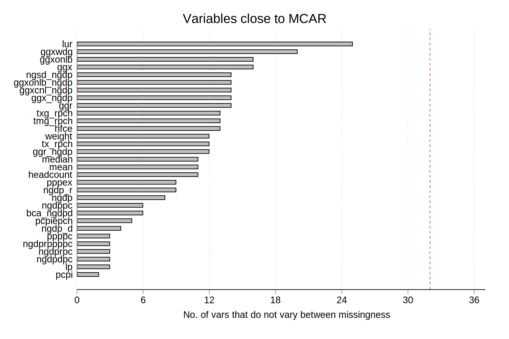

Several things are done to clean and set up the data for analysis
First, we analysis the proportion of missings values in the dataset. The graph below shows the proportion share of variables that have a particular proportion of missings values.
Second, out of the 46.00 variables analyzed, the following variables have zero missing values:
year pop datatype hfceused lngdp
We need to check first whether it is necessary to impute missing values. If data are missing completely at random (MCAR), then throwing out cases with missing data does not bias your inferences . However, if data is MAR (missing at random), the probability that a variable is missing depends only on observed data, but not the missing data itself, or unobserved data, so it is necessary to imput missing values to avoid biases in the estimation.
There are several ways to check whether the data is MCAR, MAR, MNAR (missing not at randome), or CDM (covariate-dependent missingness), yet none of them is a formal test to determine whether the pattern of missingness. One way is to run logit models to test if any of the other variables predict whether a given variable is missing. If they do, then the data is more likely to be MAR rather than MCAR. This approach is costly and the results are diffictul to summarize given it requires to run 1806.00 logit models.
A simpler approach would be to run t-test to see if the values of the other variables vary between missingness groups. For the 46.00 variables used this time, graph below shows how what variables are closer to be MCAR.

Another approach is to use the Litte’s MCAR test, implemented by Cheng Li (2013) for Stata in the command mcartest. The main problem with this test is of convergence as the number of variables increase. Yet, it is worth taking a look at it more carefully.
To perform multiple imputation, it inecessary to set the data as panel. Given that we have two types of welfare aggregate (i.e., income and consumption) we need to crete an auxiliary id variable to set the data.
* more cleaning is done before this,
gen id = real(strofreal(code)+"0"+strofreal(datatype))
mi set mlong
mi xtset id year
The success of the overall imputation model depends on the success of all the individual models. If a single model fails to converge, the imputation process as a whole will fail. If a single model is misspecified, it may bias the results of the analysis model. Given that all the variables are continuous, it makes sense to use a standard regress model. However, since we cannot asure normality in each of them, we use Predictive Mean Matching (PMM).
global m = 5
mi impute chained (pmm, knn(10) ) weo* = mean, add(${m}) rseed(123456) /*
*/ by(datatype) force
The command midiagplot, available by typing net install st0263.pkg makes diagnostic plots that compare the distribution of the imputed values with the observed ones.